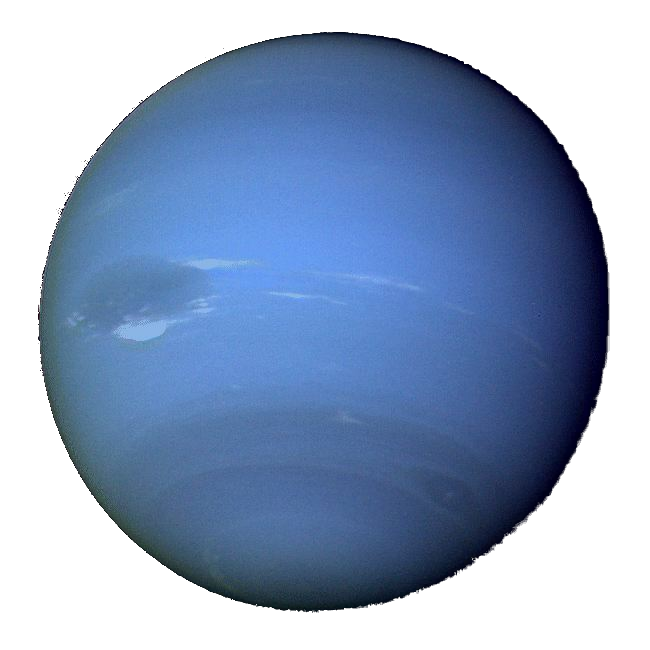

Uranus

The seventh planet from the sun,
Uranus is an oddball.
It’s the only giant planet whose equator
is nearly at right angles to its orbit
— it basically orbits on its side.
Astronomers think the planet collided with some
other planet-size object long ago,
causing the tilt. The tilt causes extreme
seasons that last 20-plus years,
and the sun beats down on one pole
or the other for 84 Earth-years.
Uranus is about the same size as Neptune.
Methane in the atmosphere gives Uranus its
blue-green tint. It has numerous moons
and faint rings.
Diameter: 31,763 miles
(51,120 km)
Orbit: 84 Earth years
Day: 18 Earth hours